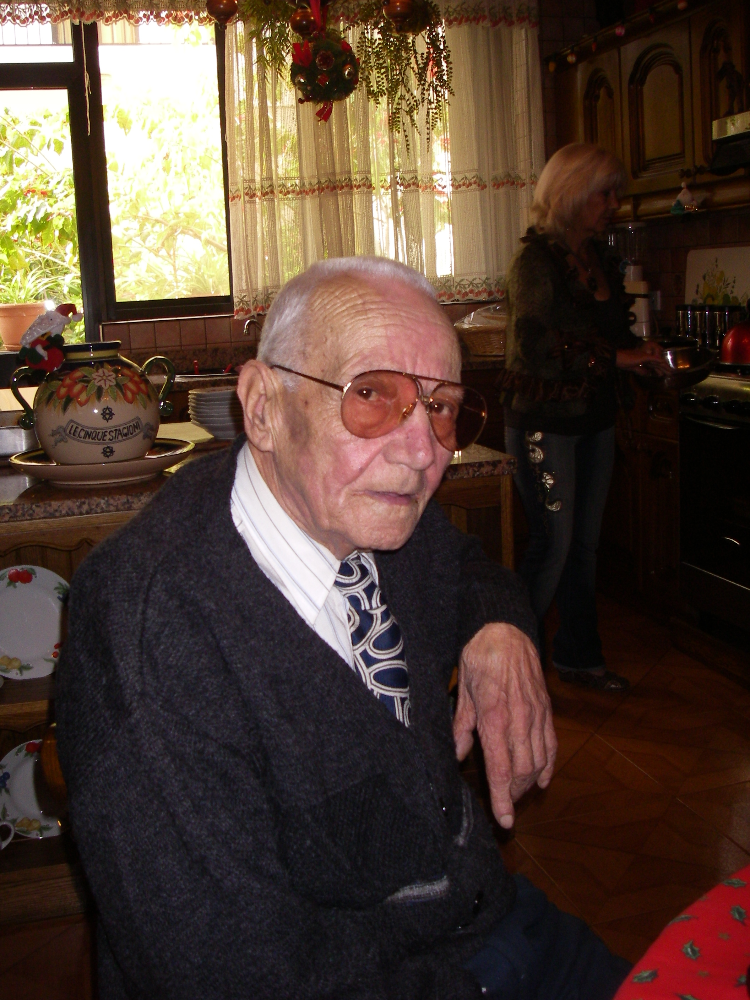

Brincat - family particulars

Carmelo Phillip Paul Brincat
Born: 24 Jan 1923 Zebbug, Malta
Married: 13 Jan 1945 Mary Cilia at St Paul's Church (Grotto), Rabat, Malta GC.
Children: Joseph; Mary-Rose; Phillip; Rita; Maria; Anthony; John
Died: 11 Jun 2007 Rabat, Malta GC